Gallery
My best shots, each one whole. Open any photo to see it full screen.

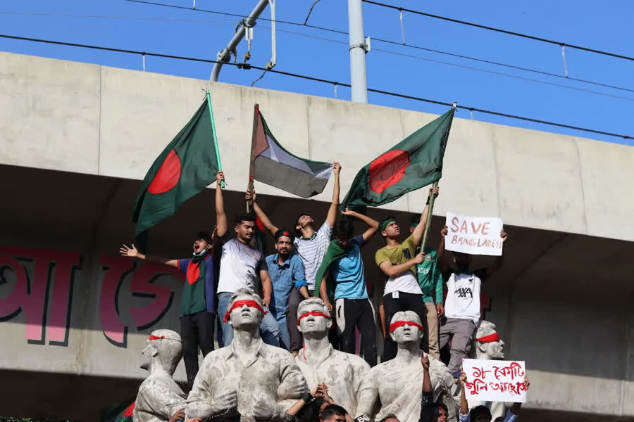
Revolution Dhaka, August 2024
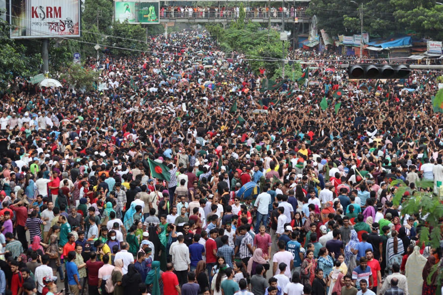
Chronicles of Change Dhaka, 2024
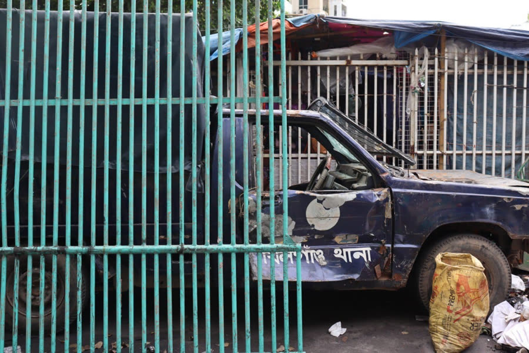
Rage Dhaka, 2024 Protectors Dhaka, 2024

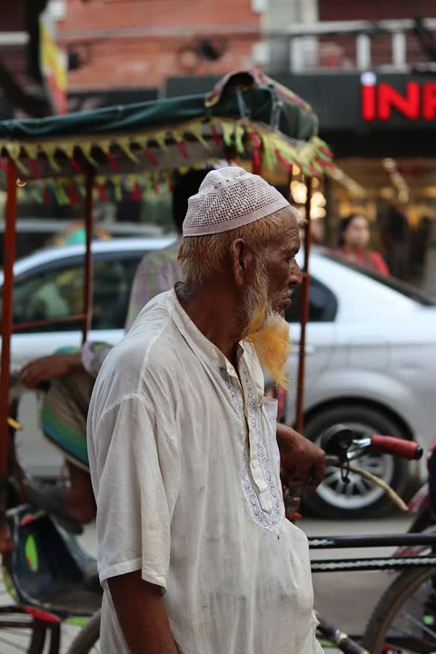
Rickshaw puller Khilgaon, Dhaka
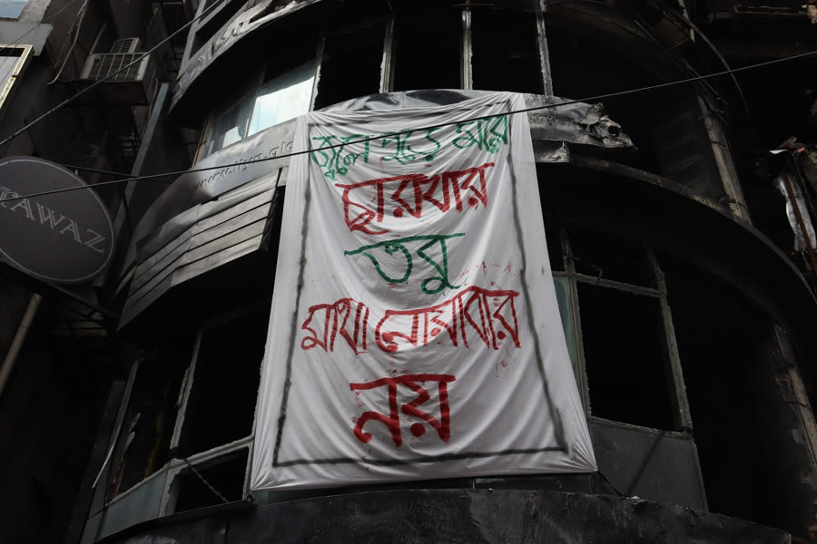
Walls That Speak Dhaka, 2024
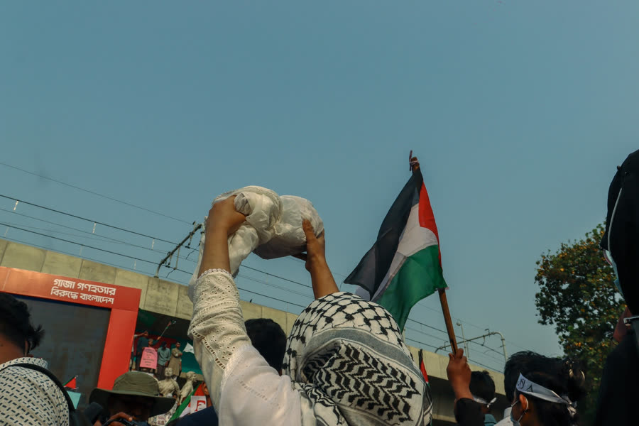
Solidarity Dhaka, 2024 Faces of Influence Dhaka

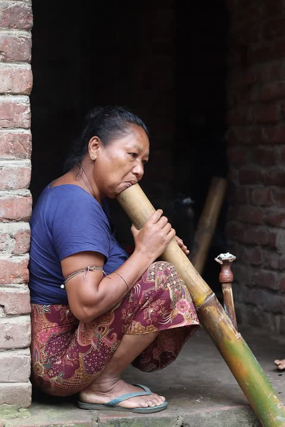
Bamboo hookah Khagrachori
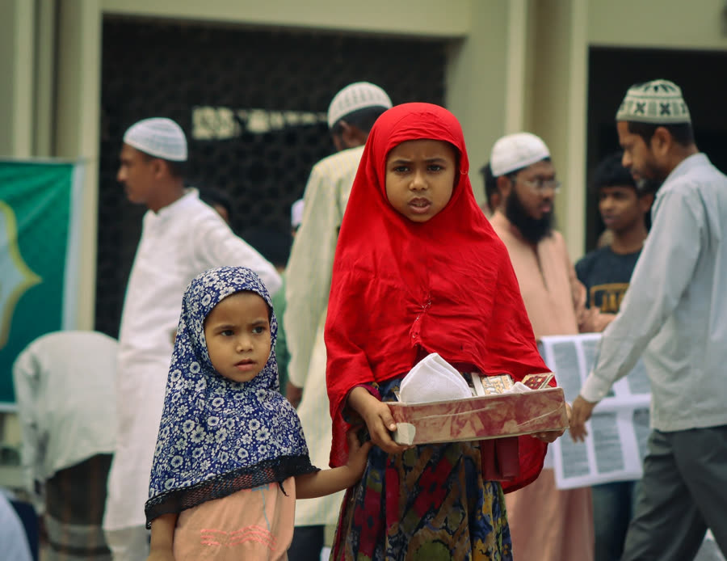
City Pulse Dhaka Echoes of Shankha On stage

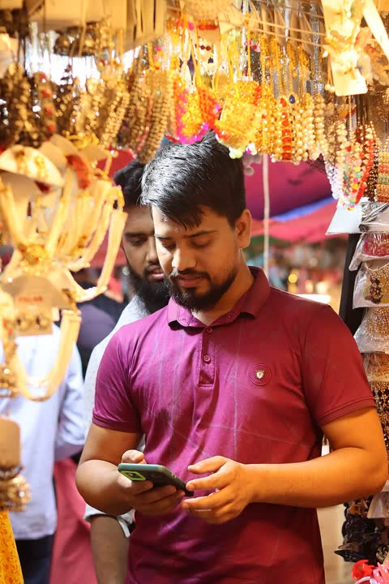
Eid shopping Dhaka Rhythm of Body On stage

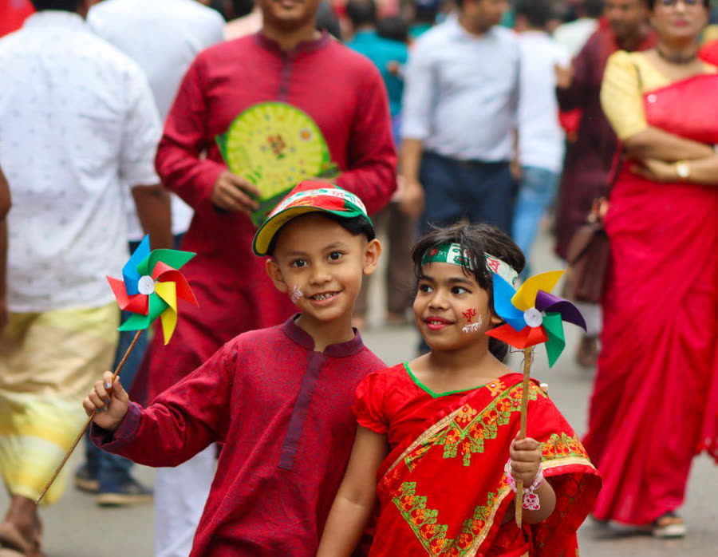
Colors of Joy Celebration
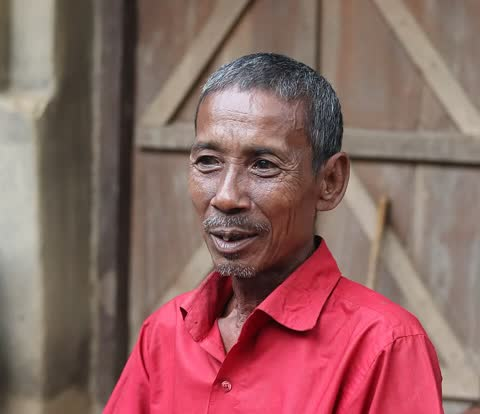
Garo family Khagrachori
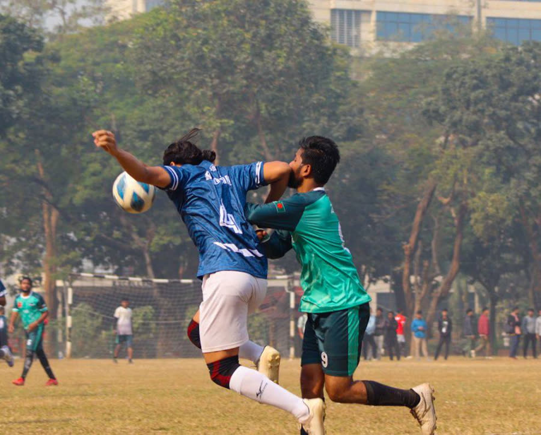
Game On Football
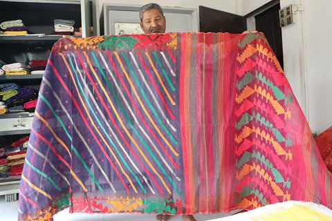
Jamdani shop Narayanganj
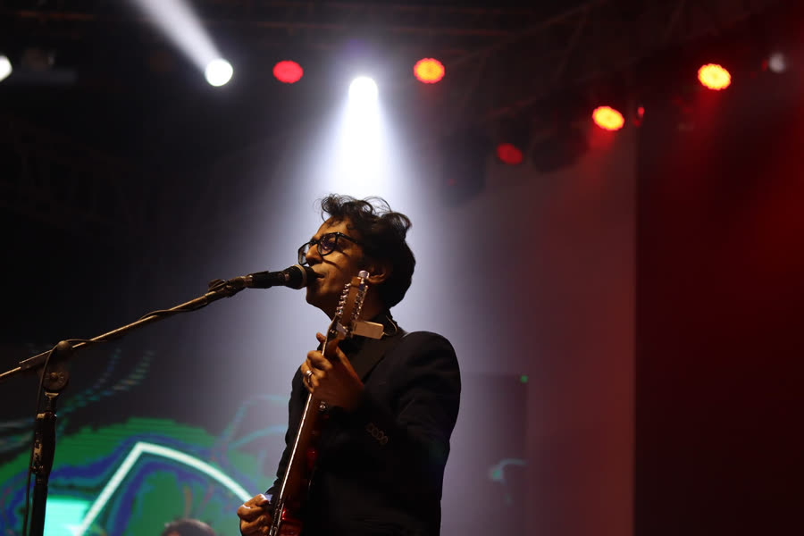
Retro Rhythms Concert
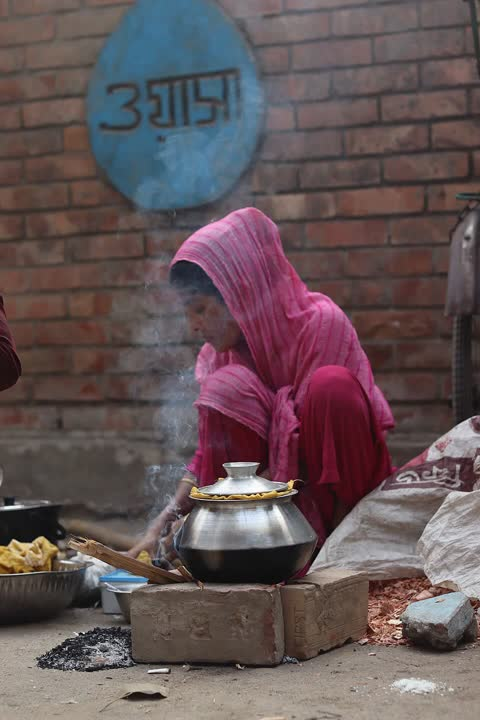
Bhapa pitha seller Dhaka
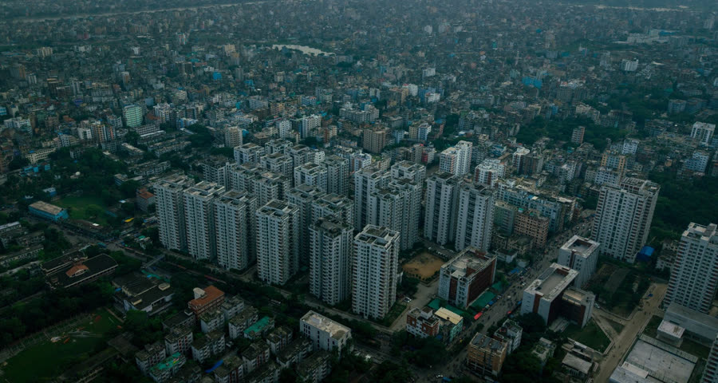
Bird's Eye Dhaka from above
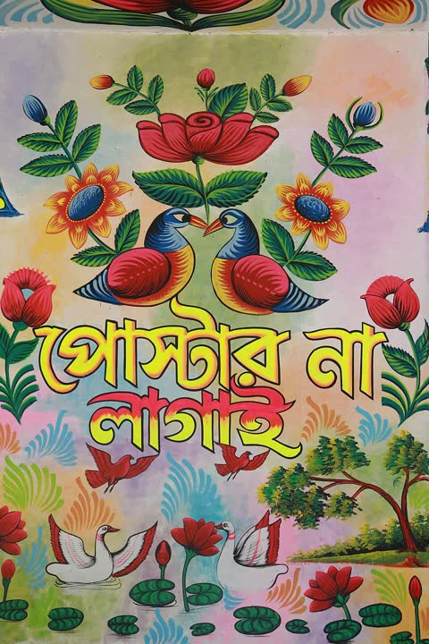
Mural Malibag–Mogbazar flyover
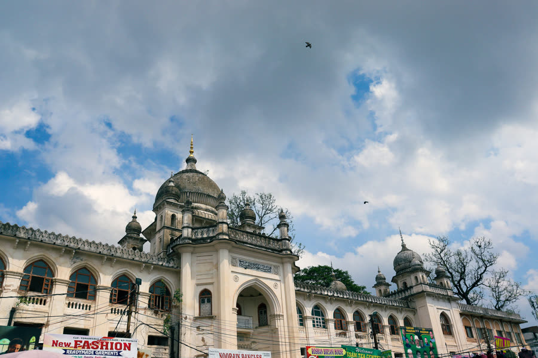
Walk Through History Old Dhaka
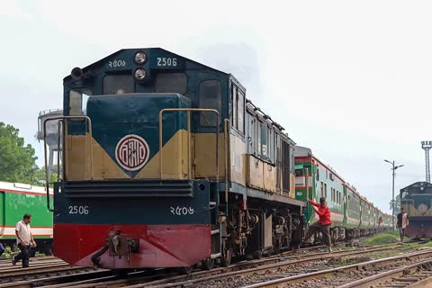
Bangladesh Railway Dhaka
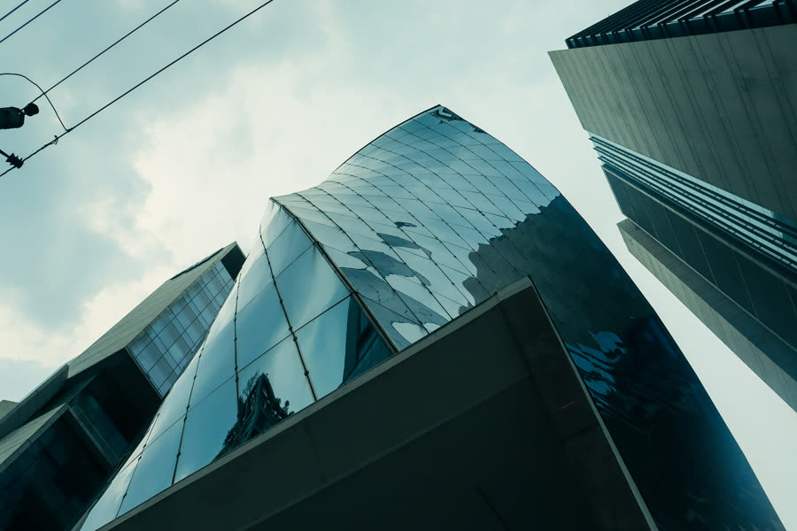
Urban Jungle DhakaI film too.
Weavers at a jamdani loom in Narayanganj, 2023. One of 33 clips I’ve shared on Wikimedia Commons, from dotara players at Shilpakala Academy to storm nights in Dhaka.